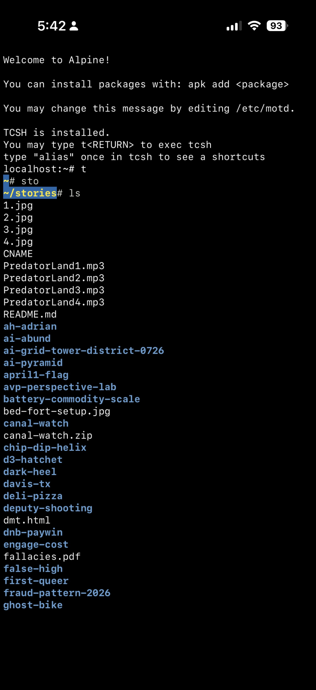
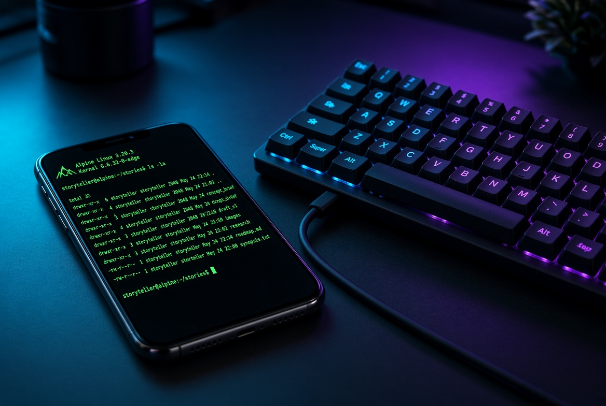

The terminal opens with the Alpine welcome message. Packages via apk. TCSH is installed. Type t and the shell switches. From there the muscle memory takes over.

The Thin Client
iSH runs a full Alpine Linux userspace on iOS without a jailbreak. It is not a remote session. It is local. The filesystem lives on the phone. apk installs packages. git works. tcsh is available with aliases. The entire command line environment that once required a dedicated machine now runs inside the same device that already carries the camera, the messages, and the bed-side mount.
This is the definition of a thin client in reverse. The computing surface is thin. The persistence and the identity of the environment travel with the hardware you already own.
Keyboard and Motor Memory
On-screen keyboards break the continuity of skill. The fingers that spent decades on real keyboards lose their accuracy when forced onto glass. Plugging a keyboard into the phone restores the physical map. The same keystrokes that once drove workstations now drive the Alpine shell. ls, cd, git status, apk add, the aliases that were typed once and remembered forever.
Motor memory is infrastructure. When the input surface matches the one the hands expect, the cognitive load drops. The mind stays on the work instead of on the interface. That is the practical reason for the cable or the wireless connection.
Why Not a Separate Linux Machine
A dedicated Linux laptop or mini PC is another device. It needs power. It needs updates. It needs to be carried or left somewhere. When it is left behind, the environment is left behind with it.
The iSH setup lives on every iPhone. There is more than one. The dual phone arrangement means the same packages, the same shell configuration, the same git identity, and the same ~/stories directory can exist on both. When one is charging or in use for something else, the other is already running the identical environment. There is no second machine to keep in sync. There is no second operating system to maintain. The thin client is the phone you already carry.
Continuity is the real advantage. The environment does not depend on being in a particular room or at a particular desk. It is present wherever the phone is present.

The Stories Directory as Proof
The ls output is not decorative. It is the working archive. The same folders that appear on the screen are the ones that get pushed to the High Tower District Stories repository. The thin client is not a toy shell. It is the surface used to maintain the record.
localhost:~# t ~# sto ~/stories# ls 1.jpg 2.jpg 3.jpg 4.jpg CNAME PredatorLand1.mp3 ... ai-grid-tower-district-0726 canal-watch d3-hatchet fallacies.pdf fraud-pattern-2026 ghost-bike ...
Everything needed for the next story, the next commit, the next update sits inside the same environment that opens with a single character alias. That is the leverage.
Reflection
Full Linux installs have their place. Separate machines have their place. For the daily work of writing, committing, and maintaining the High Tower District archive, the thin client is enough. Alpine under iSH plus a keyboard restores the command line without requiring a second computer to own, charge, or remember.
The same environment on every iPhone means the skill stays sharp and the work stays continuous. That is the practical win.
The environment travels with the phone because it is the phone.